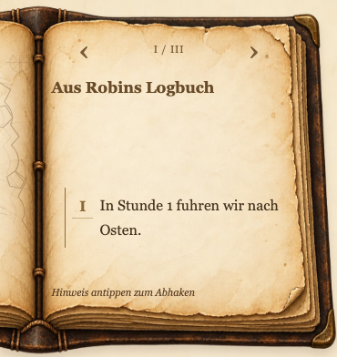
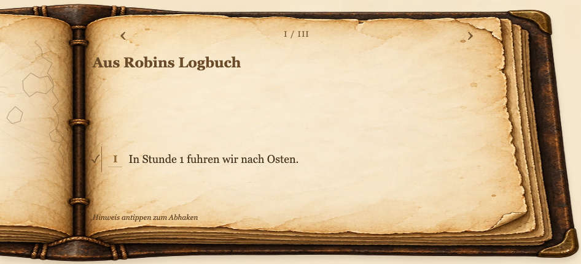
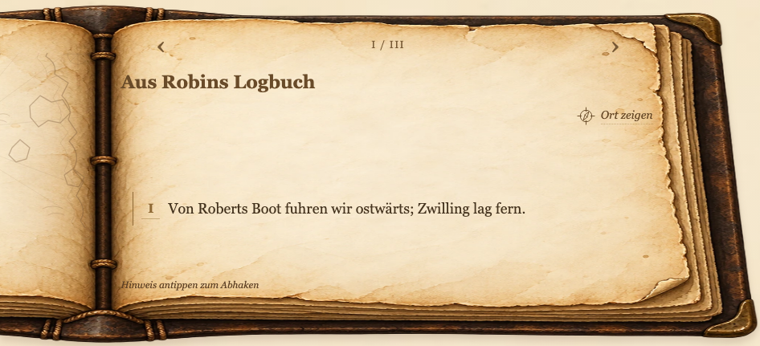
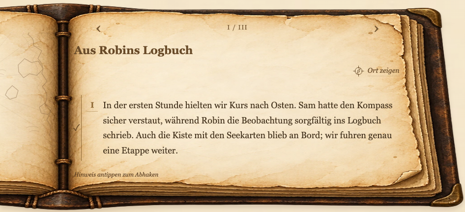
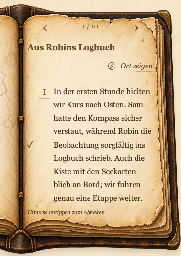

Nachabnahme · Skeuomorphes Logbuch
24. November 2026 · Echte Chromium-Screenshots, Desktop 1440 × 1080 und Mobil 390 × 844 CSS-Pixel. Alle acht Zustände wurden visuell geprüft. Die verlinkten Originale zeigen jeweils das vollständige aufgeschlagene Buch.
Vorherige Screenshot-Abnahme · Bisheriger Prüfbericht · Aktueller Abnahmestand . Die frühere Bildübersicht bleibt unverändert erhalten. Aktuell lokale Konzeptions- und Abnahmephase; kein PR erstellt oder aktualisiert.
Die vorhandene Buchtextur, der angeschnittene linke Bogen und die Georgia-Typografie bleiben erhalten. Die Pfeile sind weiter in die Papierfläche eingerückt; „Ort zeigen“ steht rechtsbündig zwischen Überschrift und Hinweis. Der kräftigere Tintenstrich wächst mit den Textzeilen. Die Abhak-Hilfe am unteren Rand ist bei gleicher Schriftgröße kontrastreicher.
Offen · ohne Ortsreferenz
Desktop · Die schmale Randmarkierung hält ihren Platz frei. 
Mobil · Blättern am oberen Papierrand.
Abgehakt · ohne Ortsreferenz

Desktop · Nur das handgezeichnete Randhäkchen kommt hinzu. Mobil · Nummer und Text bleiben vollständig lesbar.
Offen · mit Ortsreferenz

Desktop · „Ort zeigen“ oberhalb des Hinweises, rechtsbündig. Mobil · Ortsaktion und Hinweis bleiben auf dem Papier.
Abgehakt · mit Ortsreferenz
Desktop · Ortsaktion bleibt auch nach dem Abhaken erreichbar. Mobil · Gleiches Layout in beiden Bearbeitungszuständen.
Mehrzeiliger Hinweis · dynamischer Tintenstrich

Desktop · Tintenstrich über alle Textzeilen, Häkchen in der Mitte. 
Mobil · Der Strich wächst mit dem Text; Ortsaktion und Text überlagern sich nicht.
Explizite Prüfung: Position, Größe, Schrift, Farbe und Deckkraft von Hinweisnummer und Hinweistext sind vor und nach dem Abhaken identisch. Der Tintenstrich orientiert sich an der tatsächlichen Textblockhöhe und reicht oben und unten jeweils 6 Pixel darüber hinaus. Das Häkchen sitzt vertikal mittig in der dauerhaft reservierten Randmarkierung. Keine Durchstreichung, Abdunklung oder statusabhängige Hintergrundfarbe.
Bedienung bei 320, 390, 620, 768, 900 und 1440 Pixeln geprüft, einschließlich langem Hinweistext: mindestens 44 Pixel große Trefferflächen, keine Überlagerung, kein seitlicher Überlauf. Tastaturbedienung, Wischgeste, Speichern und Rückgängig bleiben erhalten. „Ort zeigen“ erscheint nur bei benannten Ortsreferenzen des aktuellen Hinweises, bringt die Seekarte ins Sichtfeld und löst deren vorhandene Ortsanzeige erneut aus; der Spielstand bleibt dabei unverändert.
Die Ortsreferenz-Bilder verwenden eine isolierte Präsentations-Testvorlage mit zwei explizit benannten Orten. Rätsellogik und reguläre Rätseldaten werden dafür nicht geändert. Reproduktion: npx playwright test tests/browser/logbook-skeuomorphic.spec.mjs.